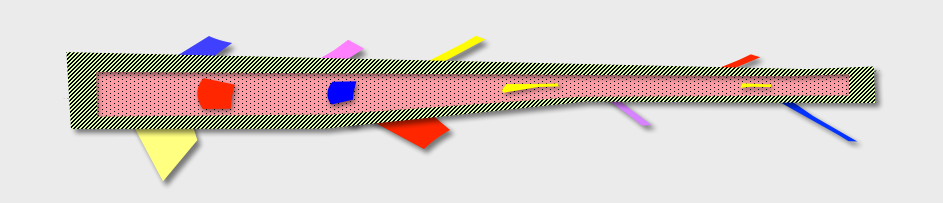

Branch By Abstraction?
Yes, by abstraction instead of by branching in source control. And no, that doesn't mean sprinkle conditionals into your source code. It means to use an abstraction concept that's idiomatic for the programming language you are using.
Context: Some types of non-functional change take so long to code that someone suggests doing the work on a branch and merging back later. These will be the types of changes that are going to impede the concurrent development of normal functional deliverables. Where the non-functional changes impact many parts of the codebase, there is a risk of repeatedly breaking the build. Where there is a risk of breaking the build, there is a "do it on a branch" suggestion.
Another factor driving that suggestion is when there is a mismatch between the release cadence and the time needed to complete the work. In other words, change can take many weeks or months and there will be releases to production before the completion of the work in question.
The branch idea would be OK if the resulting merge back could be instantaneous and guaranteed to be a pain-free merge. That is impossible though for any higher throughput development team that is also doing regular refactorings as they go. Note too that executives often express their displeasure with nonfunctional work taking longer than promised by canceling it.
Branch by abstraction is a methodical procedure which has some steps:
- Introduce an abstraction to methodically chomp away at that time consuming non-functional change
- Start with a single most depended on and least depending component
- To not jeopardize anyone else's throughput, work in a place in the codebase that is separate to the existing code
- Methodically complete the work, temporarily duplicating tens or hundreds of components
- Go live in a 'dark deployment' mode part complete as many times as needed
- Scale up your CI infrastructure to guard old and new implementations
- When ready, switch over in production (a toggle flip to end 'dark deployment' mode)
- Lastly, delete old implementations and the abstraction itself (essential follow up work)
That last is the characterizing difference between the methodical branch by abstraction procedure and the ordinary and lasting abstractions in your codebase. The removal of the abstraction (and old implementation) is the equivalent to the merge back from the branch that you've now avoided.
Here is the same idea told as a review of an open mic night at QCon, at which a third contender — branch by if-condition — also took the microphone. It is the shabby third choice, and the review explains why. A statement from the venue follows.
The Quarterly Trunk — Stage & Screen
Branch by abstraction instead of branch by source control
Two old rivals traded polished sets at the QCon open mic. Then a third act shuffled to the microphone, and the evening stopped being an evening.
There is a particular kind of hush that falls over the QCon bar when the sign-up sheet goes round, and on this occasion it was earned. The billing, in the Mainline Memorial Hall, promised the rivalry everyone came for: branch by source control, the grand old incumbent, against branch by abstraction, the upstart that keeps being invited back. What we got instead was two decent sets and then a hostage situation.
Branch by source control went first, as it always insists on doing. It is a heavy performer, and it knows it. The whole act is built around a single promised finale — the merge back — which it declines to rehearse and describes only in the future tense. For forty minutes it worked in isolation, off to one side, gathering material nobody else in the room could see. The material was not bad. But an act whose punchline depends on landing perfectly, once, at the end, after weeks of drift, is an act that lives or dies on a promise. The room has watched it die before. Someone at the back muttered "just tell us how it ends" and was not, I noticed, shushed.
Branch by abstraction followed and did the smartest thing available to it: three tight minutes and off. One seam, one place where old and new meet, chosen with obvious care — the most depended-on and least depending component, which in stagecraft terms is simply knowing where to stand. It never asked the audience to imagine a finale, because it performed the finale: it introduced the thing, it used the thing, and then, in front of everyone, it removed the thing. The abstraction was deleted on stage. That deletion is the merge back, paid up front, in public, with no debt carried out of the room.
And then the sheet turned over, and there was a third name on it.
I had assumed branch by if-condition was a bit of programme filler. It is, I am told, a veteran — it has been doing this since before the incumbent had a name for what it did — and it took the microphone with the unhurried confidence of something that has never once been asked to stop. It opened with a line that got a real laugh, and I want to be fair here, because the laugh was deserved. The material was a loyalty scheme migrating to a new rewards engine. The opening line was this:
if (useNewRewards) {
RewardPoints.accruePointsAfterTravel(person, POINTS_BASELINE * miles);
} else {
RewardSystem.incrementCosFlightsTraveled(person, oneWayOrReturn);
}The laugh was one of recognition, and it curdled about four seconds later, when the room finished reading it. Look at what the two halves actually take. One counts miles, the other counts flights. One wants a baseline multiplier, the other wants to know whether the trip was a return. These are not two implementations of one idea. They are two different ideas, and the conditional is not choosing between technologies — it is holding two incompatible models of what a customer has earned, in the middle of the business logic, at the exact point where the earning happens. There is no seam here. There is a fork in the road with the road still attached to both ends.
And a fork at a call site has to be repeated at every call site. The second verse was the redemption path, same fork, different shape, because redeeming is not accruing:
if (useNewRewards) {
RewardPoints.redeem(person, pointsRequired(cabin, miles));
} else {
// legacy: tiers, not points - and it throws if the member is Silver
RewardSystem.deductFlightCredits(person, creditsFor(cabin));
}Then the same fork again in the browser, where a front-end developer had been asked to show members their balance and had, quite reasonably, written down what they were told:
const balance = flags.useNewRewards
? `${member.points.toLocaleString()} points`
: `${member.flightCredits} flights to next tier`;Then a fourth, in the reporting tier, where the flag had been renamed by someone no longer with the company, and the polarity — I checked my notes twice — had been quietly inverted:
SELECT member_id, points_balance FROM rewards_new WHERE :legacy_scheme_off
UNION ALL
SELECT member_id, flights_ytd * 1000 FROM rewards_old WHERE NOT :legacy_scheme_offThat * 1000 is somebody's guess at an exchange rate, sitting in a reporting query,
where finance will find it. Nobody on stage acknowledged it. I am not sure anybody on stage knew.
Somewhere around the fifth verse it became clear that this was not a set with a structure. It was a set with a surface area. Each verse was recognisably the same joke, and each had been retold by a different person, in a different language, at a different time, with no one keeping a list — and because the fork sits in the business logic rather than behind a seam, each retelling had to make its own decision about what the business rule even was. The mobile client defaulted the other way. The batch job's rendition had been commented out and then uncommented by a second hand. Two verses, eleven minutes apart, disagreed about whether a cancelled flight took the points back, and the audience noticed before the performer did.
This is the whole indictment, and it is worth stating plainly, because it is not a matter of taste. The abstraction put the choice behind a seam, so there was one place that knew about it and every caller was ignorant by design. If-condition puts the choice at the call sites, so every caller must know, and there are as many places as there are calls — across as many languages as the system happens to be written in, each with its own opinion about what the rule is. And the fatal part: nobody in the building knows the number. You cannot take a bow you cannot count your way to. There is no grep that returns confidence, because the verses do not share a phrase to grep for. Ask how many are left and the honest answer is a shrug.
| Act | Decision points | How it ends |
|---|---|---|
| Branch by source control | One, deferred | A merge back, promised, often late or cancelled |
| Branch by abstraction | One, at a chosen seam | Deletion of the abstraction — done, on stage |
| Branch by if-condition | One per call site — unknown, and growing | — |
The stage managers made their first attempt at the fifty-minute mark. They were courteous about it. The house lights came up, the next act's name was read out, and branch by if-condition was walked to the wings by two people in lanyards, still talking, and did not resist. I made a note that it was over. The note was wrong.
Because the voice carried on. Not from the wings — from the room. A monitor speaker near the bar picked up a verse nobody had cued. Then the second-floor overflow screen, which had been showing a static holding slide, began playing a verse from what I can only assume was a recording made years earlier by someone who has since changed teams. A phone on the merchandise table joined in, one bar behind. The performer was not on stage. The performance was still going. This is the part I would struggle to convey to anyone who was not there: removing the act from the stage did not end the act, because the act had never actually been in one place to remove.
The managers made a second attempt, from a different doorway, and to their credit they made it without any visible loss of composure. It achieved nothing, because there was nothing in the doorway to intercept. Two of them then went to look for the monitor speaker, which I think was the first genuinely reasonable decision anyone had made all evening, and which was also the moment the scale of the problem became a matter of arithmetic rather than stagecraft.
By now there were managers in the corridor who had not been in the room for the booking, and I want to be careful to be fair to them, because they were not fools and they were not enjoying themselves. One was explaining, to nobody in particular, that they had been assured beforehand that this act came off after twenty minutes. Another said that the assurance had been given in writing, and seemed to find this both important and, on reflection, not much help. A third asked how many speakers the Hall had. Nobody in the corridor knew, and it was becoming clear that this was not a question anyone had thought to ask, because it had not occurred to a single person present that an act might simply not have an end.
I saved myself at the one-hour mark. I would like to report this as a considered critical judgement; it was closer to a fire drill. On my way out I passed a manager on a radio, patiently asking somebody in another building whether they knew of any other speakers. The reply was inaudible, but the shape of it was not. They did not know. That is the review.
Branch by source control asks you to trust a finale it has not written. Branch by abstraction performs its finale in front of you and leaves the stage empty. Branch by if-condition never has a finale, because a finale requires knowing where the thing is, and by the eleventh verse in the fourth language, nobody does. Two stars out of five, both of them for the opening line, which really was funny as an in-joke — and which segued, before the laugh had finished, into the specific inner dread of realising that the act is not joking, and that it intends to keep going long past the last chuckle it earned.
The open mic runs continuously. It has not been confirmed whether the third act has finished.
For immediate release
A statement regarding Tuesday's open mic at the Mainline Memorial Hall
QCon management and the event operations team would like to apologise to patrons affected by the overrun of the third act at Tuesday evening's open mic session, held in the Mainline Memorial Hall.
We are unable at this time to state the duration of the overrun, as the act has not yet concluded.
We wish to record that the performer was removed from the stage at 20:50, promptly and courteously, in accordance with our published procedures. We understand that a number of patrons have written to us to point out that this is not the same thing as the act having stopped. We accept that distinction, and we are grateful to those patrons for their patience in explaining it to our staff on the night.
Our team had been assured in advance, in writing, that the act would come off after twenty minutes and that they had done this many times before within that timeslot. That assurance was given in good faith by a party no longer associated with the booking. A review of how such assurances are obtained is under way, and we expect it to conclude before the act does.
We would like to thank the two acts who finished. We note in particular that the second of these concluded by removing its own equipment from the stage and leaving the space clear for the next performer, and we have asked our events team to make this the standard we book to in future. It costs a venue nothing and it is, we now appreciate, the entire difference.
Patrons may be assured that the branch by if-condition act will not be taking the stage at a future QCon.
Enquiries may be directed to the duty manager, who is currently in the corridor.
— QCon management and event operations, Mainline Memorial Hall
To be clear about the target: this is not an argument against feature
flags/toggles,
which are a fine and necessary tool. It is an argument against using a conditional as your abstraction
mechanism for a long non-functional migration. One flag, read once, behind an idiomatic abstraction that
callers never see — that is branch by abstraction, and the flag is doing the job flags are for. The same
flag read at ninety call sites, in four languages, each site forking on old and new business methods that take
different arguments and mean different things, is the third act. Note that the first of those still has a
conditional in it somewhere. The difference is not whether you wrote an if. It is whether anything
else in the codebase had to know you did.
Both pieces above are fiction. "The Quarterly Trunk", Cody McCodeface and the venue's statement are invented, no such open mic took place, and nothing here is a report of an actual QCon session, speaker or member of staff. QCon appears because it is where this argument actually gets had, over a drink, and with thanks to Floyd Marinescu for being a good sport about it HOPEFULLY. Any resemblance to a migration you have personally lived through is the point rather than a coincidence.